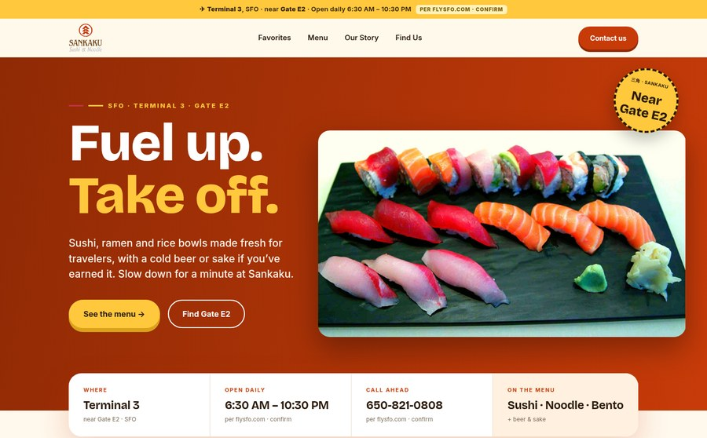
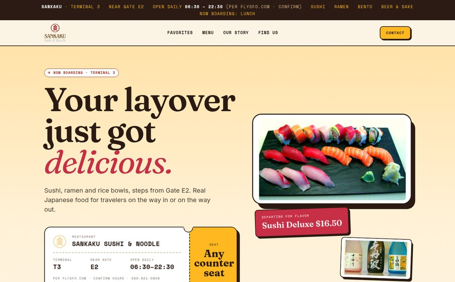
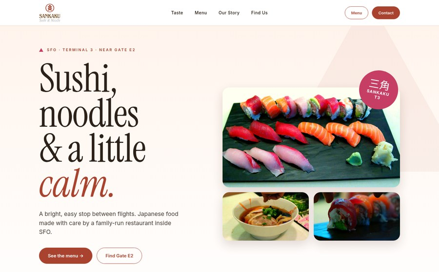

Three design directions for the new Sankaku website (SFO Terminal 3). Pick a card and open the Home and Menu pages — please tell us which one you like, or which parts to combine.
サンカクの新しいウェブサイトのデザイン案を3つご用意しました。各案の「Home」「Menu」をご覧いただき、気に入った案や組み合わせたい点をお知らせください。


